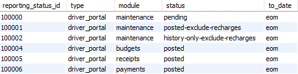

Vehicle Balance with Transactions Set-up
From Help wiki
Main Page → Driver Portal → View my vehicle balance → with Transactions | Legacy →  Set-up → with Transactions Set-up | Legacy Set-Up
Set-up → with Transactions Set-up | Legacy Set-Up
Contents |
Overview
Below are the set-up details for the Vehicle Balance screen when you are using the with Transactions presentation.
Discuss the set-up with your Account Manager who will to adjust the configurations to suit your preferences.
Update Global Controls
| Setup / Reference Data → gb_controls | |||
|---|---|---|---|
| Module | Name | Comment | Default Value |
| gb | driver_portal_hide_funds_summary | This control is set to 'no' by default. Set to 'yes' to hide the View my vehicle balance Funds Summary section. | no |
| gb | driver_portal_use_gl_posting_map_reporting |
Transactions: 'yes' Legacy: 'no' | yes |
| gb | driver_portal_view_my_balance_mode | 'show' Use this setting to show the the View my vehicle balance button on the Driver Portal Home Screen. 'hide_funds_available_balance' 'hide' | show |
| gb | driver_portal_view_my_balance_text | Customise the text that is displayed on the screen. Consider this relative to the data selections you are using for this feature. | Notes: Funds received are those processed at report date Pending and requested claims are not included |
Enable Report Map for Driver Portal
This screen uses the Funds Check report map. If this has not been set-up, you need to do this first.
Check and create a record in the [gl_posting_map_reporting] table where type = 'driver_portal'. This enables the reporting functions used here.
Use the useful queries on this page to review and create an upload file if needed.
Match to Funds Check or Driver Report
Depending on your preferences, [gl_reporting_statuses] can be set to match either the Funds Check or the Driver Report.
The system is set to match the Funds Check by default.
Use the useful queries on this page to review the entries in the [gl_reporting_statuses] table and update to to match your preferred choice.
Sample updates are shown below.
| Funds Check | Driver Report |
|---|---|
 |  |
| Field | Value | Comments |
|---|---|---|
| gl_reporting_status | ||
| reporting_status_id | Num | System allocated unique identifier. |
| type | Text | Set as 'driver_portal' to link the set records to this feature. |
| module | Enum | Enter the module that the filter record is for.
|
| status | Enum | Choose each status that you want to select in the feature and it's reports.
|
| to_date | Enum | Choose a end date for the selected records.
|
Enable the Driver Portal Reports
Use the useful queries on this page to check and update the related [gb_report_queries] records to be active.
The two records where name = 'driver_portal' should be set to have status_flag = 'active'.
One report is can be generated from the Contracts / FBT tab as 'Driver Portal'. This is for internal users to see the same records as the driver sees in their report.
The other report is used to generate the balance transaction screens and report drivers see in the Driver and Employee Portal.
Configure the Driver Portal Reports
Use the useful queries on this page to check and update the driver portal reports to show or hide columns to match your preferred result.
The transaction details need a minimum of the follow four columns displayed to function properly. They are:
- Date
- Type
- Description
- Amount
The configuration can be expanded to more columns;
- Posted Date
- Supplier
- Reference
- Odometer
- Valid Reading
- Status
The columns you display depend on which report you are aligning with and what level of detail you want to show your Drivers and Employees.
Useful Queries
# UPDATE GLOBAL CONTROLS
# Review query only. Update controls in Setup / Reference Data → gb_controls
select module, name, value
from gb_controls where name
IN ('driver_portal_use_gl_posting_map_reporting'
,'driver_portal_view_my_balance_mode','driver_portal_view_my_balance_text')
;
# ENABLE REPORT MAP FOR DRIVER PORTAL
# Contract Type - check which contract types are mapped for the Driver Portal (should only be novated)
SELECT pm.posting_map_code,pm.posting_map_group,rm.description AS report_map,pmr.type
FROM gl_posting_maps AS pm
INNER JOIN gl_posting_map_reporting AS pmr ON pm.posting_map_id = pmr.posting_map_id
INNER JOIN gl_reporting_maps AS rm ON rm.reporting_map_id = pmr.reporting_map_id
WHERE pmr.type IN ('funds_check','driver_portal')
ORDER BY pm.posting_map_code,rm.description,pmr.type;
# Create upload file for gl_posting_map_reporting
# Setup / Import Table Data Module - 'gl|General Ledger' Table - 'gl_posting_map_reporting'
SELECT
'' as posting_map_reporting_id, pmr.posting_map_id, pmr.reporting_map_id, 'driver_portal' AS type
FROM gl_posting_maps AS pm
INNER JOIN gl_posting_map_reporting AS pmr ON pm.posting_map_id = pmr.posting_map_id
INNER JOIN gl_reporting_maps AS rm ON rm.reporting_map_id = pmr.reporting_map_id
#WHERE pmr.type = 'driver_portal'
WHERE pm.posting_map_group = 'novated' and pmr.type = 'funds_check'
#and rm.description = 'Standard' # Add in if duplicate report maps exist
ORDER BY pm.posting_map_code,rm.description,pmr.type
;
# MATCH TO FUNDS CHECK OR DRIVER REPORT
# Check the set-up of the transaction selections by status
SELECT * FROM gl_reporting_statuses
ORDER BY module,status,to_date
;
# ENABLE THE DRIVER PORTAL REPORTS
# Check the Report Queries are active (status_flag should be active)
SELECT * from gb_report_queries WHERE name = 'driver_portal'
;
# CONFIGURE THE DRIVER PORTAL REPORTS
# Review the Driver Portal report and show/hide columns
SELECT * from gb_report_queries WHERE name = 'driver_portal' and sub_page IS NULL
;
# Review the Contracts / FBT report and show/hide columns
SELECT * from gb_report_queries WHERE name = 'driver_portal' and sub_page = 'fbt'
;

{kind=link}